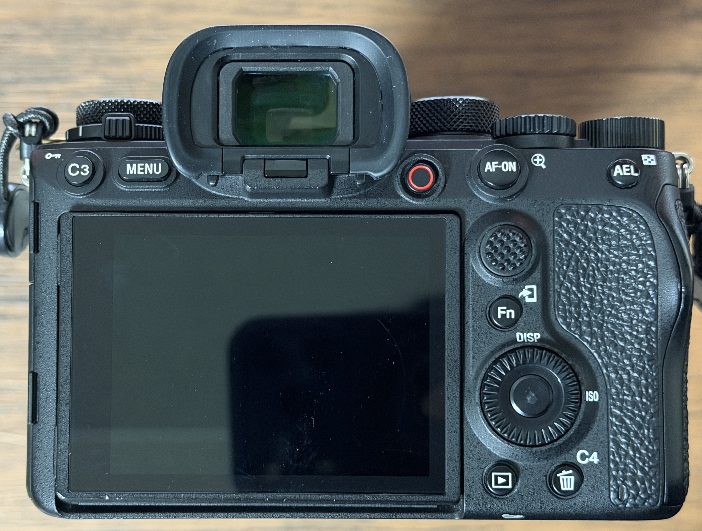

Chapter 1
ボタン割当
カスタムキーへの機能割り当てと、各ボタン・ダイヤルの役割一覧。
カスタムボタン（上面）

【ダイヤル】
【ボタン】
- 撮影モード切替(赤丸)
→ M(マニュアル)モードかS(シャッタースピード優先)モードを使用するのが
分かりやすいと思います。 - 露出補正(橙丸)
→ 基本は0で良いですが、ライブ撮影は黒つぶれが気になるかもなので、
少しプラス側に回しても良いと思います。 - 上段： 連射モード切替、下段： AFモード切替(青丸)
→ 上段は□～□M辺りに設定するのが良いと思います。
H・M・L付の□は連射速度違い、□のみは単射です。
※手ブレ防止にはHかMに設定して、2・3枚ずつ連射するのもオススメです。 - F値変更(白丸)
→ F値(絞り値)を変更するためのダイヤルです。(M/A(絞り値優先)モード時有効) - シャッタースピード変更(緑丸)
→ SSを変更するためのダイヤルです。(M/Sモード時有効)
【ボタン】
- C1ボタン： サイレントモード切替
→ シャッター音のON/OFFを切り替えます。
※ローリング歪みが気になる場合はOFFにしてください。 - C2ボタン: 押す間AF/MF切替
→ 使用することはないと思います。
カスタムボタン（背面）

ここにカスタムボタン（背面）の割り当て内容を記入してください。
例：C3ボタン、AFオンボタンなど
例：C3ボタン、AFオンボタンなど
ダイヤル・ホイール
【ダイヤル】
【ボタン】
- ISO感度ダイヤル
【ボタン】
- C1ボタン： サイレントモード切替
→ シャッター音のON/OFFを切り替えます。
※ローリング歪みが気になる場合はOFFにしてください。 - C2ボタン: 押す間AF/MF切替
→ 使用することはないと思います。
その他のボタン
ここにその他のボタンの割り当て内容を記入してください。
例：Fn（ファンクション）ボタン、AELボタンなど
例：Fn（ファンクション）ボタン、AELボタンなど